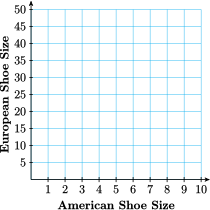
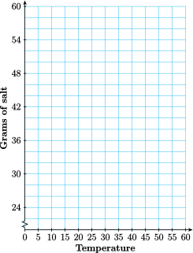

Section 1.5 Equations of Lines
¶Subsection Polar Ice
Three main factors influence the energy balance of the Earth and its temperature:
The total energy influx from the sun
The chemical composition of the atmosphere
The ability of the Earth's surface to reflect light, or albedo
Because polar ice reflects light from the sun, the radiation balance over an ice-covered ocean is very different from the balance over an open ocean. Sea ice also influences deep-ocean circulation, and small changes in ocean currents can have a large effect on coastal and global climate. Thus, the ice component of the climate system, called the cryosphere, plays an important role in the Earth's radiation balance.
General circulation models predict that global warming over the next few decades will occur mainly in the polar regions. As polar ice begins to melt, less sunlight is reflected into space, which raises the overall temperature and fuels further melting. This process is called ice albedo feedback.
Since satellite monitoring began in 1979, Arctic sea ice cover has decreased about 10% per decade, falling to a startling new low in 2007. NASA scientists are working to understand this sudden decline and what it means for climate change. "It really is imperative that we try to understand the interactions between the ice, ocean and atmosphere," according to senior scientist Josefi no Comiso.

Numerous factors influence the freezing point of sea water, including its salinity, or mineral content. Unlike tropical oceans, which are temperature-stratified (water near the surface is warmer), the Arctic Ocean is salinity-stratified. In this Lesson we'll develop a formula for the freezing temperature of water in terms of its salinity.
Subsection Slope-Intercept Form
In earlier sections we learned that:
The \(y\)-intercept of a line gives the initial value of \(y\text{.}\)
The slope of the line gives the rate of change of \(y\) with respect to \(x\text{.}\)
Comparing these observations with the form for a linear model, we see that
Usually we write the terms in the opposite order, like this: \(y = mx + b\text{.}\) We call this last equation the slope-intercept form for a line.
Slope-Intercept Form.
We can write the equation of a line in the form
where \(m\) is the slope of the line, and \(b\) is the \(y\)-intercept.
Notebook 1.71. QuickCheck 1.
Example 1.72.
The graph shows the amount of garbage \(G\text{,}\) in tons, that has been deposited at a dumpsite \(t\) years after new regulations go into effect.
Choose two points on the graph and compute the slope, including units.
Find an equation for the graph shown.
State the meaning of the slope and the vertical intercept.

-
Two points on the line are \((0, 25)\) and \((10, 150)\) The slope is
\begin{gather*} m=\frac{\Delta G}{\Delta t}=\frac{125\text{ tons}}{10\text{ years}}=12.5 \text{ tons/year} \end{gather*} -
The vertical intercept of the graph is \((0,25)\text{,}\) so \(b=25\text{,}\) and
\begin{gather*} G=mt+b = 12.5t + 25 \end{gather*} The slope tells us that garbage is accumulating at a rate of 12.5 tons per year. The vertical intercept tells us that when the new regulations went into effect, the dump held 25 tons of garbage.
Notebook 1.73. Practice 1.
Delbert decides to use DSL for his Internet service. Earthlink charges a $99 activation fee and $39.95 per month, DigitalRain charges $50 for activation and $34.95 per month, and FreeAmerica charges $149 for activation and $34.95 per month.

Subsection Coordinate Formula for Slope
Slope measures the change in one variable with respect to unit changes in another.To calculate the net change between two points on a number line, we can subtract their coordinates.
For example, if you walk from \(3^\text{rd}\) street to \(8^\text{th}\) street, your distance, \(s\text{,}\) from the center of town has increased by 5 blocks, or
If the temperature \(T\) drops from \(28\degree\) to \(22\degree\text{,}\) it has decreased by \(6\degree\text{,}\) or
The net change is positive if the variable increases, and negative if it decreases.
Thus, for the graph shown at right, the net change in \(t\)-coordinate from \(P\) to \(Q\) is
We can use the notion of net change to calculate slopes. Recall the coordinate formula for computing slope.

Coordinate Formula for Slope.
If \((x_1, y_1) \) and \((x_2,y_2) \) are two points on a line, then the slope of the line is given by
as long as \(x_1 \ne x_2\)
Notebook 1.74. QuickCheck 2.
Notice that the numerator of the slope formula, \(y_2 - y_1\text{,}\) gives the net change in \(y\text{,}\) and the denominator, \(x_2 - x_1\text{,}\) gives the net change in \(x\text{.}\) The coordinate formula is equivalent to our definition of slope, \(m=\dfrac{\Delta y}{\Delta x} \text{,}\) and is useful for computing slope when we know the coordinates of two points on a line.
Example 1.75.
The graph shows wine consumption, \(W\text{,}\) in the US, in millions of cases, starting in 1990. In 1993, Americans drank 188.6 million cases of wine.
Find the slope of the graph from 1993 to 2003.
-
State the slope as a rate of change. What does the slope tell us about this problem?

-
If \(t = 0\) in 1990, then in 1993, \(t = 3\text{,}\) and in 2003, \(t = 13 \text{.}\) Thus, the points \(P(3, 188.6)\) and \(Q(13, 258.3)\) lie on the line. We want to compute the slope,
\begin{gather*} m=\frac{\Delta W}{\Delta t}=\frac{W_2-W_1}{t_2 - t_1} \end{gather*}between these two points. Think of moving from \(P\) to \(Q\) in two steps, first moving horizontally to the right from \(P\) to the point \(R\text{,}\) and then vertically from \(R\) to \(Q\text{.}\) The coordinates of \(R\) are \((13, 188.6)\text{.}\) (Do you see why?) Then
\begin{align*} \Delta t \amp= t_2-t_1 = 13-3=10\\ \Delta W \amp= W_2-W_1= 258.3-188.6=69.7 \end{align*}and thus
\begin{gather*} m=\frac{W_2-W_1}{t_2-t_1}=\frac{258.3 - 188.6}{13 - 3}=6.97 \end{gather*} -
The slope gives us a rate of change, and the units of the variables help us interpret the slope in context.
\begin{gather*} \frac{\Delta W}{\Delta t} = \frac{258.3 - 188.6 \text{ millions of cases}}{13-3 \text{ years}}= 6.97 \text{ millions of cases/year} \end{gather*}Over the ten years between 1993 and 2003, wine consumption in the US increased at a rate of 6.97 million cases per year.
Notebook 1.76. Practice 2.
Subsection Point-Slope Formula
Now consider using the slope formula for a different problem. If we know the slope of a line and the coordinates of one point on the line, we can use the coordinate formula for slope to find the \(y\)-coordinate of any other point on the line. Instead of evaluating the formula to find \(m\text{,}\) we substitute the values we know for \(m\) and \((x_1, y_1)\text{.}\) Then we plug in the \(x\)-coordinate of the unknown point and solve for \(y\text{.}\)
Notebook 1.77. QuickCheck 3.
There is only one line that passes through a given point and has a given slope. So, if we know the slope of a particular line and one point on the line, we can find its equation. Remember that the equation is really just a formula that gives the \(y\)-coordinate of any point on the line in terms of its \(x\)-coordinate. To find the equation, we can use the coordinate formula for slope.
Example 1.78.
Graph the line that passes through the point \((1, -4)\) and has \(\text{slope}=\dfrac{-3}{4} \text{.}\)
Find an equation for the line in part (a).
We first plot the given point, \((1,-4)\text{,}\) and then use the slope to find another point on the line. The slope is \(m=\dfrac{-3}{4}=\dfrac{\Delta y}{\Delta x} \text{,}\) so starting from \((1,-4)\) we move down 3 units and then 4 units to the right. This brings us to the point \((5,-7)\text{.}\) We draw the line through these two points.

-
To find an equation for the line, we start with the slope formula,
\begin{gather*} m=\frac{y_2 -y_1}{x_2 - x_1} \end{gather*}We substitute \(\dfrac{-3}{4} \) for the slope, \(m\text{,}\) and \((1,-4) \) for \((x_1,y_1) \text{.}\) For the second point, \((x_2,y_2) \text{,}\) we substitute the variable point \((x,y) \) to obtain
\begin{gather*} m=\frac{y + 4}{x-1} \end{gather*}To solve for \(y\) we first multiply both sides by \(x − 1\text{.}\)
\begin{align*} \alert{(x-1)}\frac{-3}{4}\amp = \frac{y+4}{x-1}\alert{(x-1)} \\ \frac{-3}{4}(x-1)\amp = y+4 \amp\amp \blert{\text{Apply the distributive law.}} \\ \frac{-3}{4}x +\frac{3}{4} \amp = y+4 \amp\amp \blert{\text{Subtract 4 from both sides.}} \\ \frac{-3}{4}x -\frac{13}{4} \amp = y \amp\amp \blert{\frac{3}{4}-4=\frac{3}{4}-\frac{16}{4}=\frac{-13}{4}} \end{align*}
When we use the slope formula to find the equation of a line, we substitute a variable point \((x, y)\) for the second point. This version of the formula,
is called the point-slope form for a linear equation. It is sometimes stated in another version by clearing the fraction to get
Point-Slope Form.
The equation of the line that passes through the point \((x_1, y_1)\) and has slope \(m\) is
You may also see the formula written in an alternate version:
Notebook 1.79. Practice 3.
Subsection Finding a Linear Model
If we have two data points for a linear model, we can find its equation. We use two steps: first we compute the slope of the line, then we use the point-slope formula.
Example 1.80.
It cost a bicycle company $9000 to make 50 touring bikes in its first month of operation and $15,000 to make 125 bikes during its second month.
Find a linear equation for the company's monthly production cost, \(C\text{,}\) in terms of the number of bikes made, \(x\text{.}\)
State the slope and vertical intercept of your line, including units. What do they tell you about the problem?
-
We first find two data points, \((x, C)\text{,}\) from the information given.
\(x\) \(C\) \(50\) \(9000\) \(125\) \(15,000\) Step 1: Compute the slope of the line.
\begin{gather*} m=\frac{C_2-C_1}{x_2-x_1}= \frac{15,000-9000}{125-5} = 80 \end{gather*}Step 2: Apply the point-sope formula, using \((50,9000) \) for \((x_1,y_1) \)
\begin{align*} C\amp=C_1 +m(x-x_1)\\ \amp=9000 +80(x-50)\\ \amp=9000 +80x-4000 \end{align*}The equation is \(C=5000+80x\)
The slope is 80 dollars per bike, and it tells us the cost of producing each bike. The vertical intercept is 5000, and it tells us that the bicycle company's fixed costs (before production begins) are $5000.
Notebook 1.81. Practice 4.
Subsection Summary
In this section, we studied three different formulas associated with linear equations: the slope-intercept formula, the coordinate formula for slope, and the point-slope formula. How are these formulas related, and how are they different?
-
The slope-intercept form, \(y = mx + b\text{,}\) is just a special case of the point-slope formula. If the given point \((x_1, y_1)\) happens to be the \(y\)-intercept \((0, b)\text{,}\) then the point-slope formula reduces to the familiar form:
\begin{align*} y\amp =y_1+m(x-x_1) \amp\amp\blert{\text{Substitute } b \text{ for } y_1 \text{ and 0 for } x_1.}\\ y\amp = b + m(x-0) \amp\amp \blert{\text{Simplify.}}\\ y\amp = mx + b \end{align*}We can use the (shorter) slope-intercept form if we are lucky enough to know the \(y\)-intercept of the line.
-
What is the difference between the slope formula
\begin{gather*} m= \frac{y_2-y_1}{x_2-x_1} \end{gather*}and the point-slope formula
\begin{gather*} m= \frac{y-y_1}{x-x_1} ? \end{gather*}They are really the same formula, but they are used for different purposes:
The slope formula is used to calculate the slope when we know two points. We know \((x_1, y_1)\) and \((x_2, y_2)\text{,}\) and we are looking for \(m\text{.}\)
The point-slope formula is used to find the equation of a line. We know \((x_1, y_1)\) and \(m\text{,}\) and we are looking for \(y = mx + b\text{.}\)
Exercises Problem Set 1.5
¶Skills Practice
For Problems 1 and 2, complete the table of values and graph the line, then answer the questions below.
1.
\(y=8-2x \vphantom{\dfrac{1}{2}}\)
| \(x\) | \(-1\) | \(~0~\) | \(~2~\) | \(~3~\) | \(~4~\) |
| \(y\) | \(\) | \(\) | \(\) | \(\) | \(\) |
2.
\(y=2+\dfrac{1}{2}x \)
| \(x\) | \(-2\) | \(~0~\) | \(~1~\) | \(~3~\) | \(~5~\) |
| \(y\) | \(\) | \(\) | \(\) | \(\) | \(\) |
-
What is the initial value for each line; that is, what is the \(y\)-value when \(x = 0\text{?}\)
Line 1:
Line 2:
-
Look at the table for each line. How much does \(y\) increase or decrease for each 1-unit increase in \(x\text{?}\)
Line 1:
Line 2:
Compare your answers to parts (a) and (b) with the equation for each line. What do you observe?
3.
Write each equation in slope-intercept form. State the slope and the \(y\)-intercept of each equation.
\(3x+2y=1\)
\(2x- \dfrac{3}{2}y=3\)
\(4.2-0.3y=6.6\)
4.
For each graph, calculate the net change in coordinate from \(P\) to \(Q\text{.}\)


For Problems 5 and 6,
Graph the line that passes through the given point and has the given slope.
Write an equation for the line in point-slope form.
Put your equation from part (b) into slope-intercept form.
5.
\((2,-5) \text{;}\) \(m=-3\)
6.
\((2,-1) \text{;}\) \(m=\dfrac{5}{3} \)
For Problems 7 and 8,
Write an equation in point-slope form for the line that passes through the given point and has the given slope.
Put your equation from part (a) into slope-intercept form.
Use your graphing utility to graph the line.
7.
\((-6.4,-3.5) \text{;}\) \(m=-0.25 \)
8.
\((80,-250) \text{;}\) \(m=2.4 \)
For Problems 9 and 10, find an equation for the line that goes through the given points. Put your equation into slope-intercept form.
9.
\((-16,-24) \text{,}\) \((8,72) \)
10.
\((-5, 65) \text{,}\) \((20,-145) \)
Applications
11.
The formula \(F = \dfrac{9}{5} C + 32\) converts the temperature in degrees Celsius to degrees Fahrenheit.
Calculate the Fahrenheit temperature when it is \(10\degree\) Celsius.
Calculate the Celsius temperature when it is \(4\degree\) Fahrenheit.
State the slope, including units, and explain its meaning for this problem.
Find the intercepts and explain their meanings for this problem.
-
Choose appropriate WINDOW settings and graph the equation
\begin{gather*} y=\frac{9}{5}x+32 \end{gather*}
12.
European shoe sizes are scaled differently than American shoe sizes. The table shows the European equivalents for various American shoe sizes.
| American shoe size | 5.5 | 6.5 | 7.5 | 8.5 |
| Europoean shoe size | 37 | 38 | 39 | 40 |
-
Use the grid below to plot the data and draw a line through the data points.
 Calculate the slope of your line. Estimate the \(y\)-intercept from the graph.
Find an equation that gives the European shoe size, \(E\text{,}\) in terms of the American shoe size, \(A\text{.}\)
13.
The table shows the amount of ammonium chloride salt, in grams, that can be dissolved in 100 grams of water at different temperatures.
| Temperature (\(\degree \text{C}\)) | 10 | 12 | 15 | 21 | 25 | 40 | 52 |
| Salt (grams) | 33 | 34 | 35.5 | 38.5 | 40.5 | 48 | 54 |
-
Use the grid below to plot the data and draw a straight line through the points. Estimate the \(y\)-intercept of your graph.
 Calculate the slope of the line.
Use the point-slope formula to find an equation for the line.
At what temperature will 46 grams of salt dissolve?
14.
Flying lessons cost $645 for an 8-hour course and $1425 for a 20-hour course. Both prices include a fixed insurance fee.
Write an equation for the cost, \(C\text{,}\) of flying lessons in terms of the length, \(h\text{,}\) of the course in hours. Hint: Find two points \((h, C)\) given in the problem. Find the equation of the line through those points.
Explain the meaning of the slope and the vertical intercept.
15.
Here is part of a typical income tax schedule: A single taxpayer owes $1500 plus 20% of the amount of their income over $13,000.
-
Complete the table of values for the tax, \(T\text{,}\) on various incomes, \(I\text{.}\)
\(I\) 15,000 20,000 22,000 \(T\) Let \(I\) represent income and write an expression for "the amount of income over $13,000." Use your expression to write a linear equation in point-slope form for the tax, \(T\text{.}\)
Write the equation in slope-intercept form. Does the vertical intercept have a meaning in this situation? Which form of the equation is more useful, the slope-intercept form or the point-slope form?
16.
Compare the graphs of \(y = 2x + 2\) and \(y = 2\text{.}\)
What can you say about the graph of any equation \(y = mx + b\) if \(b = 0\text{?}\)
Explain why you cannot use the intercept method to graph the equation \(y = mx\text{.}\) What should you do instead?
What can you say about the graph of any equation \(y = mx + b\) if \(m = 0\text{?}\)
What is the slope of any horizontal line?